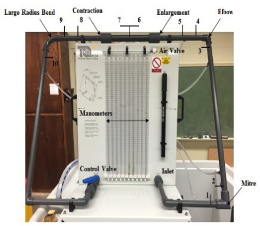

Lab Final Exam (Practical Component)#
The figure below is the apparatus used for this examination.

Objective(s)#
Experimentally determine the frictional loss coefficients for the mitre, elbow, expanion, contraction, and large radius bend fittings.
Compare the experimentially determined values with literature obtained values for the smae type of fitting.
Background#
The commonly applied loss model used for a fitting is
where \(\Delta H\) is the change in total dynamic head across the fitting, thus the loss coefficient \(K\) is
or
where \(_u\) and \(_d\) represent upstream and downstream (of the fitting) velocities. Usually the velocity associated with the smaller diameter of the fitting is used.
In the apparatus above, the sudden enlargement uses the upstream velocity to determine the velocity head and for the sudden contraction, the downstream velocity characterizes the velocity head.
The \(K\) values are determined from
Bends \( K = \frac{\Delta H}{\frac{V^2}{2g}} \)
Expansion \(K = \frac{\Delta H}{\frac{V_u^2}{2g}}\) The \(K\) value can be approximated from \(K=[1- \frac{A_u}{A_d}]^2\)
Contraction \(K = \frac{\Delta H}{\frac{V_d^2}{2g}}\) The \(K\) value can be approximated from \(K=[ \frac{A_d}{A_u}-1]^2\)
Experimental Protocol#
The experimental protocol is:
Establish flow (you will make 5 readings, so start big and go smaller), be sure not to flood the manometer manifold.
For the first flow rate, measure flow rate by your preferred method (time-to-fill, rotameter, …) if you use the obstruction based instruments report the meter constant.
Record manometer readings across each fitting.
Change flow setting and repeat steps 2-3 until you have 5 readings.
Use these values to populate a data tables below:
Reduced Data (Results)#
The reduced fitting loss data are shown below:
Notes:
U_small == velocity is smaller diameter portions; used for mitre, elbow, expansion, contraction, and long sweep
U_large == velocity in larger diameter portions; used for contraction and expansion
DH == Head loss in meters (implicit units conversion already applied)
Q_bar == average flow all measurement methods that had non-zero values
Re == Reynolds number in indicated diameter.
Q_bar (L/s) |
U_small (m/s) |
U_big (m/s) |
Re_small |
Re_big |
DH_mitre (m) |
DH_Elbow (m) |
DH_Expand (m) |
DH_Contract (m) |
DH_sweep (m) |
|---|---|---|---|---|---|---|---|---|---|
\(Q_1\) |
|||||||||
\(Q_2\) |
|||||||||
\(Q_3\) |
|||||||||
\(Q_4\) |
|||||||||
\(Q_5\) |
The table below shows the computed K-values from the experimental results using the fitting loss prototype function in Appendix I. Selected literature values are shown in adjacent columns.
Q_bar (L/s) |
K_mitre (obs) |
K_mitre (lit) |
K_elbow (obs) |
K_elbow (lit) |
K_expand (obs) |
K_expand (lit) |
K_contract (obs) |
K_contract (lit) |
K_sweep (obs) |
K_sweep (lit) |
|---|---|---|---|---|---|---|---|---|---|---|
\(Q_1\) |
||||||||||
\(Q_2\) |
||||||||||
\(Q_3\) |
||||||||||
\(Q_4\) |
||||||||||
\(Q_5\) |
Literature Values from:
Elbow bend K value: https://innovationspace.ansys.com/Lesson-4-Minor-Losses-in-Pipes-and-Ducts-Handout.pdf
Mitre bend K value: https://datatool.pumps.org/fluid-flow-iii/fr-loss-water
Expansion/contraction K value(s): https://www.ryantoomey.org/wiki/Loss_coefficient
Long sweep K value: https://help.autodesk.com/view/INFWP/ENU/?guid=GUID-A39E901A-1D47-4FFD-8AED-81AFDAA15375
Sample Calculation(s)#
The sample calculations illustrate how the first row of each table was populated, remaining rows differ only by flow rate and measured head losses.